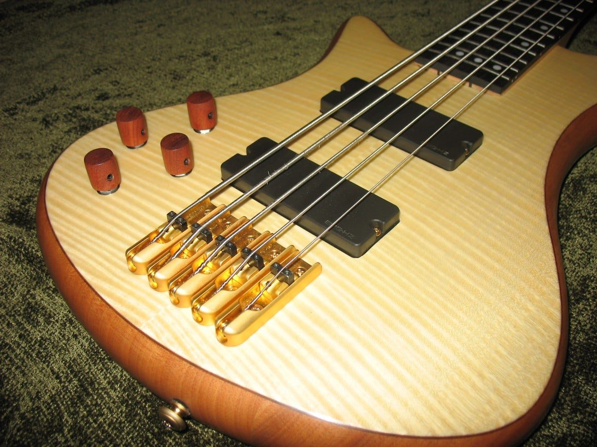

Guitar Building
Custom guitars and basses built from the ground up: bodies, necks and headstocks shaped to how you play. Four, five and six-string basses, left-handed builds and one-off designs.
- Custom bodies, necks & headstocks
- Guitars and 4, 5 & 6-string basses
- Left- and right-handed builds